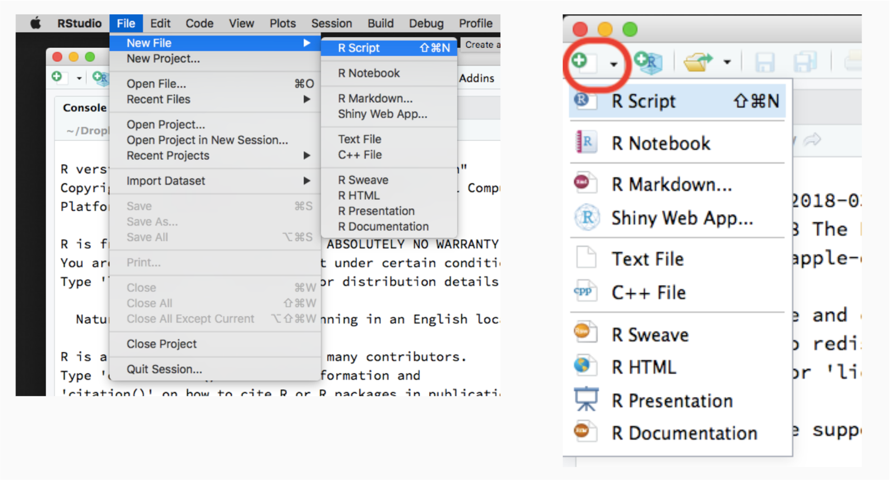
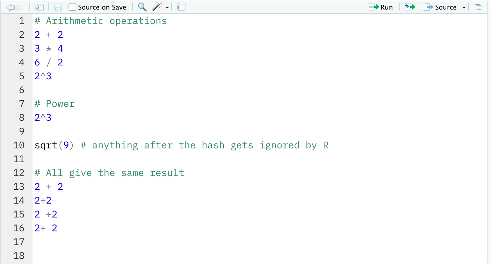

2 + 2
3 * 4
6 / 2
2^31: R basics
Prelude
Be organised!
When writing code, it is fundamental to be organised. Create a different folder for each course or project that can be considered a self-contained box.
In that folder you will store:
- code files (called R scripts)
- subfolders with other items within them; for example a subfolder called “data” containing the data to analyse
In your computer, create a folder called “r-bootcamp”, in which you will do all the work for this course. Go inside the r-bootcamp folder, and create a subfolder called data.
Now go ahead and open RStudio!
R scripts
Typing code in the console is handy because it is interactive and returns a result immediately, but writing in the console is only recommended for very quick calculations. Longer code should be written in special code files, so that you can save all your work and get back to it another day. If you typed all your code in the console, you would lose it and you won’t be able to build on top of what you did on previous days of work. You would have to always start from scratch!
We write code in R scripts. These are simply text files with a file name ending with extension .R
In an R script you will write your code and, when you’re happy with it, you can send it to the console for execution by either highlighting it and clicking Run on the top right of the editor, or placing your cursor at the end of each line and pressing Control+Enter (on Windows) or Command+Enter (on macOS).
Once you opened RStudio, you can create a new R script file using any of these methods.
1. RStudio menu
From the RStudio menu, click File -> New File -> R script
2. Editor menu
On the Editor panel, click the first icon on the top-left, then select script.

Give a useful name and save your R script!
You should give a useful name to your R script, otherwise if in a month time you will try to find some code you wrote in the past, you won’t find it.
In summary, an R script
- is a text file in which you will type your R code before sending it to the console (which will run it).
- has a file name ending with .R such as lesson1.R
R is a calculator
It’s time to throw away that table calculator you perhaps had in high school. R is smarter and lets you do bigger calculations much faster!
In the R script lesson1.R type the following.
Then, place your cursor at the end of the first line and press Ctrl + Enter (on Windows) or Cmd + Enter (on macOS) to send the code to the console to be executed. Each time you press Ctrl/Cmd + Enter, the cursor will move to the next line for you!
You should see the following output in the console:
2 + 2[1] 43 * 4[1] 126 / 2[1] 32^3[1] 8We can also add comments to explain what code does. Comments are helpful when the computation is complex and hard to understand, so in the following example it’s not really needed, but it’s just meant to show you how to add comments.
In an R script a comment is provided by the hash symbol, #. Anything written after an hash symbol will not be run by the R console as it will be interpreted as a reminder/explanatory message for the reader.
# Power
2^3[1] 8sqrt(9) # anything after the hash gets ignored by R[1] 3R ignores spaces, and the following will all return the same result:
2 + 22+22 +22+ 2
However, we added a space before and after arithmetic operators such as +, -, * to make it easier to read. Typically, we do not add spaces around powers.
Checkpoint
Your R script should look something like this by now:

Let’s consider again this operation:
3 * 4[1] 12In the above example, [1] indicates that the output is the first element of a vector of length 1 (we will discuss vectors later in this course).
It is important for you to try the extra examples that follow. Remember that to successfully learn programming you need to actually type the code.
In the examples above, sqrt() and abs() are examples of so-called functions. Functions take some input (or multiple inputs), do some computation with those inputs, and return a result or output.
Here, the function sqrt() takes a nonnegative number and returns its square root. The abs() function takes a number as input and, if the input is nonnegative, it returns the same number; while if the input is negative, it makes it positive.
R has many other functions, and users can even create their own functions. We will see more on this later on.
Objects
R can store information by creating an object with a name of our choice.
We use the assignment operator <- to assign some value to an object:
name <- computationTypically, it is recommended to use a name that makes sense for the value that is being stored.
The name of an object must follow some rules:
It cannot begin with a number (but it can contain numbers)
It cannot contain spaces
It cannot use special characters such as
$,%,+,-,*,/,^which have a special meaning in R.
The Environment panel (top-right of RStudio) will display all the objects that you have created in the current R session. Once you have create an object, you can simply refer to it by name.
To see the actual value, simply call the name of the object:
x <- log(2^3)
x[1] 2.079442The arrow means: take what’s on the right and assign it to the name on the left.
Note: If you do not wish to view the result, as sometimes it may print too much stuff, simply do not call the name of the variable.
x <- log(2^3)You can then use the object to do subsequent computations:
x * 3[1] 6.238325Note that if you assign a different value to the same object name, then the value of the object will be changed. So be careful to not overwrite objects that you plan to use later!
Another thing to pay attention to is that R is case sensitive. Hello is not the same as either hello or HELLO. As a consequence, we receive an error in the R console when we type X rather than x, which is defined above.
XError in eval(expr, envir, enclos): object 'X' not foundGetting familiar with programming errors or bugs is part of learning to program. Do not panic when you get an error, it doesn’t mean the PC is exploding. You can make as many errors as you want and fix them iteratively.
In programming you actually learn from your errors. The tricky part is figuring out how to fix them, and you will learn this with time. Here, the error message tells us that the object X does not exist. We can see the list of existing objects in the Environment tab in the upper-right window, where we will find that the correct object is x.
It is also possible to view the list of created objects in the console by using the list objects function ls():
ls()[1] "has_annotations" "x" Let’s create more objects!
obj1 <- 50
obj2 <- 10
obj3 <- obj1 / obj2
obj3[1] 5Look at the objects created:
ls()[1] "has_annotations" "obj1" "obj2" "obj3"
[5] "x" Remove one or more object:
Or, to remove the entire list of created objects:
Until now we have only assigned numbers to an object, but R can also store other types of values as objects. For example, you can store a string of characters by enclosing it by double quotation marks or single quotation marks. Don’t mix and match!
edinburgh <- "university"
edinburgh[1] "university"In character strings spacing is allowed:
edinburgh <- "department of psychology"
edinburgh[1] "department of psychology"Also note that R treats numbers a characters if you tell it to do so:
result <- "8"
result[1] "8"However, you cannot perform arithmetic operations on characters as those are defined for numbers only. For example, trying to do addition or taking the square root of a character string will return an error:
result + 2Error in result + 2: non-numeric argument to binary operatorsqrt(result)Error in sqrt(result): non-numeric argument to mathematical functionR knows what kind of operations make sense on each object by assigning each object to a specific class. For example, numbers such as 2, 8, 1000, 3.2 are of class numeric, while character strings such as the words "aja", "martin" are of class character. The function class() will tell you what class is your object.
result[1] "8"class(result)[1] "character"class(3.6)[1] "numeric"x <- 5
class(x)[1] "numeric"class("josiah")[1] "character"class("5")[1] "character"class(sqrt)[1] "function"There are many other classes in R, and you will see more as you proceed through the course.
Conditions
How do we check whether or not some condition holds? For example, is 2^3 equal to 8? The answer can be either TRUE or FALSE. That is what R will print.
To check whether a something equals something else, we use double equal signs == (to distinguish with the single equal used to assign a value to a variable):
2^3 == 8[1] TRUE2^3 == 12[1] FALSETo check whether a value is smaller than another:
3 < 8[1] TRUE3 > 8[1] FALSEWhat does each of the following check for?
4 <= 4
4 <= 5
4 >= 4
4 >= 5We use <= to test whether the LHS is less than or equal to the RHS:
4 <= 4[1] TRUE4 <= 5[1] TRUEWe use >= to test whether the LHS is greater than or equal to the RHS:
4 >= 4[1] TRUE4 >= 5[1] FALSELet:
x <- 18
y <- 10- Is
x < y? - Is
log(y) < x?
You can assign conditions to an object, say
out <- 3 > 2
out[1] TRUEThe out object is an object of class logical, or a logical object in short — which is exactly what the values TRUE and FALSE are, logical values.
If you try to perform arithmetic operations on logicals, TRUE is converted to 1 and FALSE to 0.
TRUE + 2[1] 3FALSE + 2[1] 2In general, to convert logical to numeric you can either multiply the values by 1, or use the as.numeric() function
To convert instead 1/0 to logical TRUE/FALSE, you use the as.logical() function:
Parentheses
Sometimes we want to do some computations before others, and to give order we use the parentheses.
If you do not use parentheses, the order of precedence is
- ^
- * or /, whatever appears first
- + or -, whatever appears first
(5 + 3) * 2[1] 165 + 3 * 2[1] 115 + (3 * 2)[1] 11(5 + 6) / 2[1] 5.55 + 6 / 2[1] 85 + (6 / 2)[1] 8Vectors
What if we wanted to store multiple values? For example, you may want to do a computation involving multiple data values.
This section will present the simplest and most inefficient way of entering data into R, which involves creating a vector.
A vector is an ordered listing of entries. If all entries are numbers, we have a numeric vector. If all entries are character strings, we have a character vector.
The following table reports the world population estimates (in thousands) for the past few decades.
| Year |
World population (thousands) |
|---|---|
| 1950 | 2536431 |
| 1960 | 3034950 |
| 1970 | 3700437 |
| 1980 | 4458003 |
| 1990 | 5327231 |
| 2000 | 6143494 |
| 2010 | 6956824 |
| 2020 | 7794799 |
| Source: United Nations, Department of Economic and Social Affairs, Population Division (2019). World Population Prospects 2019, Online Edition. Rev. 1. | |
We can now enter the world population estimates into R by creating a numeric vector object. To do so, we use the combine function c() which combines together different entries. The entries should be provided to the c() function separated by commas:
world_pop <- c(2536431, 3034950, 3700437, 4458003,
5327231, 6143494, 6956824, 7794799)
world_pop[1] 2536431 3034950 3700437 4458003 5327231 6143494 6956824 7794799Note that the combine function can also be used to concatenate two separate vectors:
pop_first_half <- c(2536431, 3034950, 3700437, 4458003)
pop_second_half <- c(5327231, 6143494, 6956824, 7794799)
pop_all <- c(pop_first_half, pop_second_half)
pop_all[1] 2536431 3034950 3700437 4458003 5327231 6143494 6956824 7794799We can check the number of items in the world_pop vector with the length() function:
length(world_pop)[1] 8We can compute the average world population for the period 1950-2020 with the function:
mean(world_pop)[1] 4994021Clearly, you could have done it by hand, summing all grades up and dividing the sum by 8. However, do you have the patience to do this for thousands of numbers? No, this is why we use R.
To access specific entries of a vector we use square brackets and inside those we specify which entry we want. This is called indexing.
world_pop[1] # first entry, i.e. for year 1950[1] 2536431world_pop[3][1] 3700437world_pop[8] # last entry, i.e. for year 2020[1] 7794799Multiple elements can be extracted via a vector of indices within square brackets. If an index is negative, the corresponding entry is removed from the vector. Note that none of these operations change the original vector, because we have not overwritten the object via an assignment.
world_pop[c(2, 5)][1] 3034950 5327231world_pop[c(5, 2)][1] 5327231 3034950world_pop[-2][1] 2536431 3700437 4458003 5327231 6143494 6956824 7794799Since the vector is a numeric vector, we can perform arithmetic operations on it. For example, we may wish to express the world population in millions rather than thousands:
pop_millions <- world_pop / 1000
pop_millions[1] 2536.431 3034.950 3700.437 4458.003 5327.231 6143.494 6956.824 7794.799Alternatively, we could be interested in the rate of increase relative to the year 1950 (which is the first entry in the vector):
pop_rate <- world_pop / world_pop[1]
pop_rate[1] 1.000000 1.196543 1.458915 1.757589 2.100286 2.422102 2.742761 3.073137You can also perform calculations using multiple vectors. In such case the operation is performed element by element.
Say you were interested in the population increase for each decade. This corresponds to the increase in a decade divided by the population at the start of the decade.
For example is the population was 100 thousands in a year, and became 120 thousands after 10 years, the percentage increase would be 20%.
To compute the percentage increase we must obtain a vector without the first decade, and another vector without the last decade. Then we must subtract the second vector from the first, such that the first entry would then be the difference in population between the years 1960 and 1950.
world_pop[-1][1] 3034950 3700437 4458003 5327231 6143494 6956824 7794799world_pop[-8][1] 2536431 3034950 3700437 4458003 5327231 6143494 6956824pop_increase <- (world_pop[-1] - world_pop[-8])
perc_increase <- 100 * (pop_increase / world_pop[-8])
perc_increase[1] 19.65435 21.92745 20.47234 19.49815 15.32246 13.23888 12.04537Finally, you can replace values in a vector by combining indexing and assignment. Let’s replace the first three entries with their rounded values:
Logical indexing
How would you keep all population estimates greater than the average?
world_pop[1] 2536431 3034950 3700437 4458003 5327231 6143494 6956824 7794799mean_pop <- mean(world_pop)
mean_pop[1] 4994021First, construct a logical vector by applying a condition to each entry of the vector:
world_pop > mean_pop[1] FALSE FALSE FALSE FALSE TRUE TRUE TRUE TRUEThen, simply provide that logical vector as indexing. Only the elements with a TRUE index will be returned
world_pop[world_pop > mean_pop][1] 5327231 6143494 6956824 7794799You can also create an indexing object and use that:
idx <- world_pop > mean_pop
world_pop[idx][1] 5327231 6143494 6956824 7794799Not avaible (i.e. missing) values
R can store missing values too. These are simply not available data, or NA in short, and they are special. As you don’t have the value, the result of a computation involving NA values will return NA.
Imagine we wanted to store the world population up to year 2030. We don’t know the last value yet, so we would have
year_new <- seq(1950, 2030, by = 10)
year_new[1] 1950 1960 1970 1980 1990 2000 2010 2020 2030The function seq(from, to, by) creates a sequence of values starting at from, ending at to, in steps specified by by.
world_pop_new <- c(2536431, 3034950, 3700437, 4458003, 5327231, 6143494, 6956824, 7794799, NA)
world_pop_new[1] 2536431 3034950 3700437 4458003 5327231 6143494 6956824 7794799 NAIf we want to divide the vector by 1000 to express the population in millions, rather than thousands, you will see that the last entry of the vector will stay as NA.
world_pop_new / 1000[1] 2536.431 3034.950 3700.437 4458.003 5327.231 6143.494 6956.824 7794.799
[9] NAWe can find which entries are NA using the function is.na()
is.na(world_pop_new)[1] FALSE FALSE FALSE FALSE FALSE FALSE FALSE FALSE TRUEAnd use this vector for logical indexing. Remember the values returned are only those for which the index is TRUE:
world_pop_new[is.na(world_pop_new)][1] NANegation, i.e. the opposite is obtained with the exclamation mark !, which means “not”
world_pop_new[!is.na(world_pop_new)][1] 2536431 3034950 3700437 4458003 5327231 6143494 6956824 7794799In general, the opposite of TRUE is FALSE, and vice versa:
!FALSE[1] TRUEx <- TRUE
x[1] TRUE!x[1] FALSE(2 == 3)[1] FALSE!(2 == 3)[1] TRUEFunctions
Functions are pieces of code that take one or more inputs (also called arguments), do some computation on those, and return an output. In the code sqrt(25), the function is sqrt and the input (or argument) is 25.
We have already seen some functions: sqrt(), mean(), class(), and c().
Some useful functions for summarising numeric vectors include length() for the length of the vector, min() for the minimum value, max() for the maximum value, range() shows the range of data, while mean() and sum() show the mean and sum of the data respectively.
length(world_pop)[1] 8min(world_pop)[1] 2536431max(world_pop)[1] 7794799range(world_pop)[1] 2536431 7794799mean(world_pop)[1] 4994021We can verify that the average grade is the same as the sum of the numbers divided by the number of entries:
As you saw above, the sum() function takes a numeric vector and sums up all its values.
Until now we have only seen functions that took a single input. However, a function can take more than one input. The syntax then becomes
function_name(input1, input2)An example of this is the seq(A, B, C) function which, as the name says, creates a sequence of values from A to B in steps of C.
As you can see above, the first input tells you the “from”, the second the “to”, the last give you the “step”. If you don’t provide “step”, this is 1 by default.
You can also see that by switching the order of the inputs, you get a different result
seq(10, 1) [1] 10 9 8 7 6 5 4 3 2 1Note. A shortcut for a sequence from A to B in steps of 1 is A:B
1:10 [1] 1 2 3 4 5 6 7 8 9 1010:1 [1] 10 9 8 7 6 5 4 3 2 1Hence, when a function takes multiple inputs, it is typical to provide the names of the inputs, resulting in the same output:
seq(from = 1950, to = 2020, by = 10)[1] 1950 1960 1970 1980 1990 2000 2010 2020seq(to = 2020, by = 10, from = 1950)[1] 1950 1960 1970 1980 1990 2000 2010 2020We can write our own function that computes the mean:
Here, we have created a function called my_mean, which takes one input, data, and does some computation on it. It creates an object m equal to the sum of the data divided by the length, and returns it.
We can then call our function on the world population data
What type of object is my_mean?
class(my_mean)[1] "function"Clearly, it’s an object of class function.
Factors
So far we have seen different classes of objects:
- numeric
- character
- function
However, there is another important class: factors.
A factor object stores data representing fixed and pre-specified categories. Such data arise for example in clinical trials, where participants are given either a placebo, a treatment already in use, or a new alternative treatment — in short “Placebo”, “DrugA”, or “DrugB”. Another example would be in questionnaires, where an user is asked to rate their experience as “excellent”, “very good”, “good”, “neutral”, “poor”, “very poor”.
Clearly, in the clinical trial it would be an error if one of the data said “DrugE” as this is not identified in the problem. Similarly, in the questionnaire example, it would be an error if a data value said “peppapig”.
To protect ourselves from wrong entries and to tell R that some data can only take a limited set of values, we use factors.
clinical <- factor(c('A', 'B', 'A', 'Placebo','A', 'Placebo', 'B', 'Placebo'),
levels = c('Placebo', 'A', 'B'))
clinical[1] A B A Placebo A Placebo B Placebo
Levels: Placebo A BThe distinct categories that the data can take are called levels of the factors. You can inspect the factor levels with the levels() function:
levels(clinical)[1] "Placebo" "A" "B" length(clinical) # we have 8 elements in the vector[1] 8class(clinical) # factor vector[1] "factor"What if we made an error when inputting the data and the 3rd participants had actually taken drug B? We can fix it as follows:
clinical[3] <- 'B'
clinical[1] A B B Placebo A Placebo B Placebo
Levels: Placebo A BNow, say you made a typing error and wrote lowercase b (note that R distinguishes between uppercase and lowercase, they are not the same thing!), you would get a
clinical[3] <- 'b'Warning in `[<-.factor`(`*tmp*`, 3, value = "b"): invalid factor level, NA
generatedclinical[1] A B <NA> Placebo A Placebo B Placebo
Levels: Placebo A Bclinical[3] <- 'peppapig'Warning in `[<-.factor`(`*tmp*`, 3, value = "peppapig"): invalid factor level,
NA generatedclinical[1] A B <NA> Placebo A Placebo B Placebo
Levels: Placebo A BRenaming a level of a factor
Rename the values “Placebo” to “P”.
Hint: look at the help for the factor() function. The argument labels might be helpful.
Collapsing two levels into a single one
Relabel drug A and B to just be “Treatment”. In other words, the factor should just say whether the participant had a placebo or was treated.
Recommended activities
Recommended readings
For further information, check to the following: